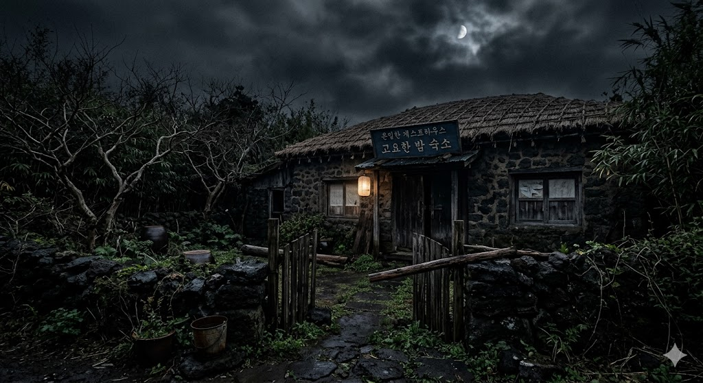

One night from my trip to Jeju that I wish I could forget.
Last summer, my friend and I went to Jeju Island for a short vacation. Our flight arrived close to midnight, and the airport was already quiet.

Last summer, my friend and I went to Jeju Island for a short vacation. Our flight arrived close to midnight, and the airport was already quiet.
When we finally arrived, the small guesthouse looked quiet and almost deserted. It looked old and almost unhabitable but we can't be bothered to notice it since we are both too tired from the travel.

Surprisingly, the owner still came out to greet us even though it was very late. She smiled kindly, showed us our room, and told us to have a good rest.
At first everything felt normal. But sometime in the middle of the night, I suddenly woke up.
My friend sat up slowly, listening carefully.
Even though we tried to convince ourselves, the laughter and footsteps continued throughout the night. Because of the strange noises, it was almost impossible for us to fall asleep.
the owner looked confused
...
My friend and i slowly looked at each other.